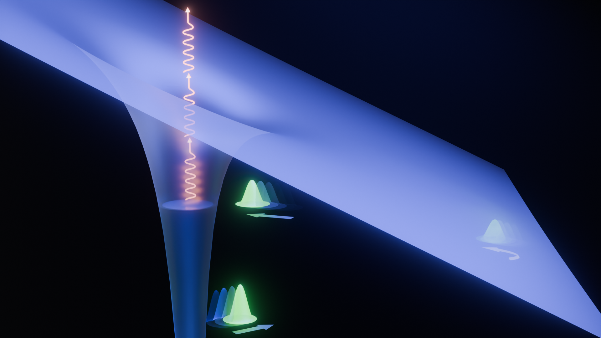
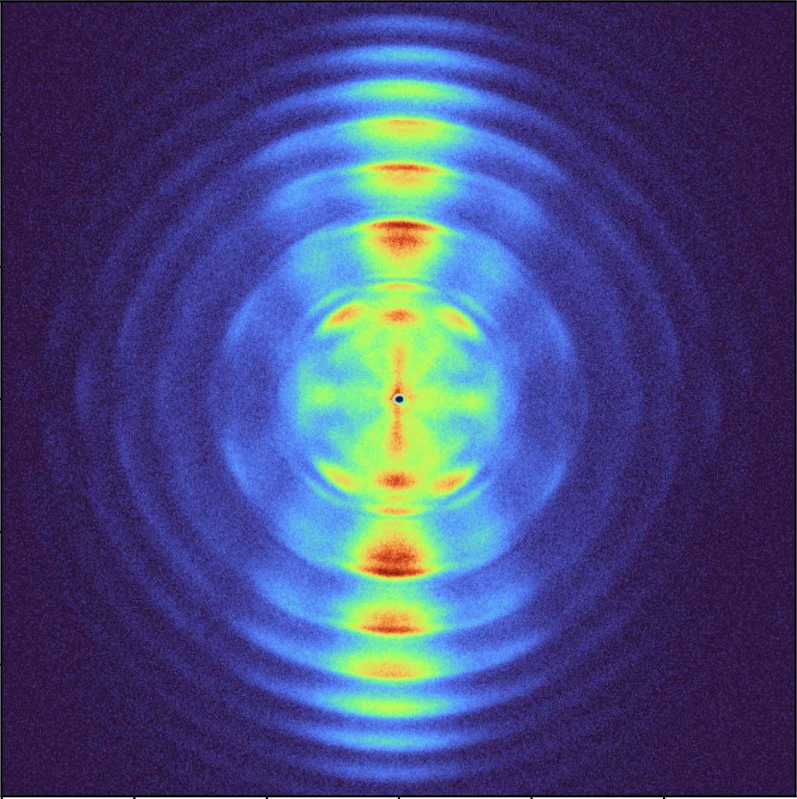

Research Interests
A breakdown of my core technical competencies and research areas in experimental physics.

Ultrafast Electron Dynamics
Unraveling the interplay of electrons in atoms, focusing on charge migration and under-the-barrier dynamics.
Read details

Ultrashort Pulse Generation
Achieving single-cycle optical pulses crucial for high-precision time-resolved experiments.
Read details

Strong Field Physics
Investigating fundamental physical processes and quantum dynamics in intense laser fields.
Read details

Quantum Metrology
Pushing the boundaries of precision measurement beyond the standard quantum limit using strong fields.
Read details